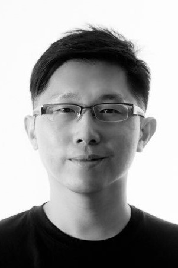
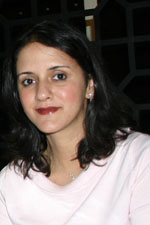

Faculty
Au, Kin-Chung Al
Senior Lecturer | Director, Roots & Wings 2.0 Programme
(65) 6516 7708
Organisational Psychology
Social Psychology

Lee, Li Neng
Senior Lecturer | Teaching Assistant Advisor and Coordinator
(65) 6516 7766
Developmental Psychology
Majeed, Khader
Adjunct Associate Professor (Honorary)
Industrial-Organisational Psychology
Personality Psychology
Social Psychology

Singh, Leher
Associate Professor | Director of Research
(65) 6516 7750
Developmental Psychology